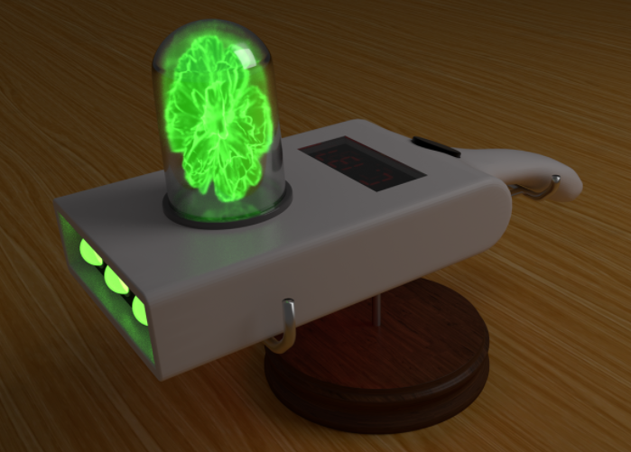
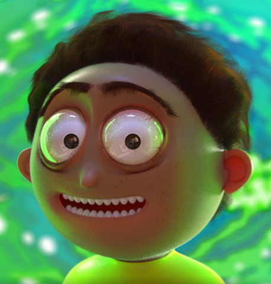

O Portal Gun é uma arma interdimensional criada por Rick, permite que eles viajem no tempo e outras dimensões. Embora a função principal de uma arma de portal seja viajar. Ela também pode ser usada de forma ofensiva ou defensiva, geralmente transportando de um local de perigo para outro. Também pode ser usado para criar obstáculos ou fugir rapidamente.

Mortimer "Morty" Smith Sr. é um dos protagonistas principais de Rick e Morty. Ele é neto de Rick facilmente influenciável e com dificuldades escolares de 14 anos de Rick, parece ser a quem este demonstra maior afeto e expectativa dentro da família, o que faz com que ele sempre acabe por acompanhar Rick em suas aventuras, enquanto descobre o que é o próprio mundo real e reflete sobre a existência das coisas.

Rick Sanchez Um cientista alcoólatra de 70 anos extremamente inteligente que é capaz de construir máquinas e acessórios tecnológicos que o permitem viajar por diversas dimensões e realidades paralelas. Ele quase nunca pensa nas consequências de suas ações e possui um comportamento excêntrico e um estilo de vida niilista. É pai de Beth, sogro de Jerry e avô de Morty e Summer.